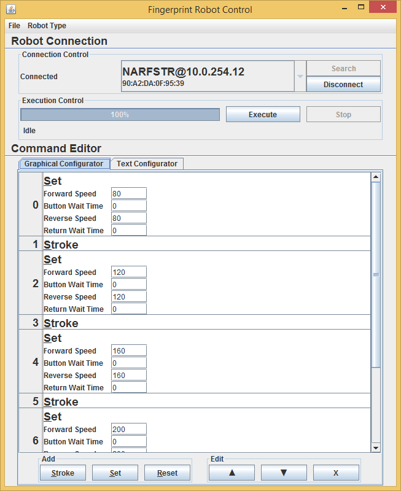
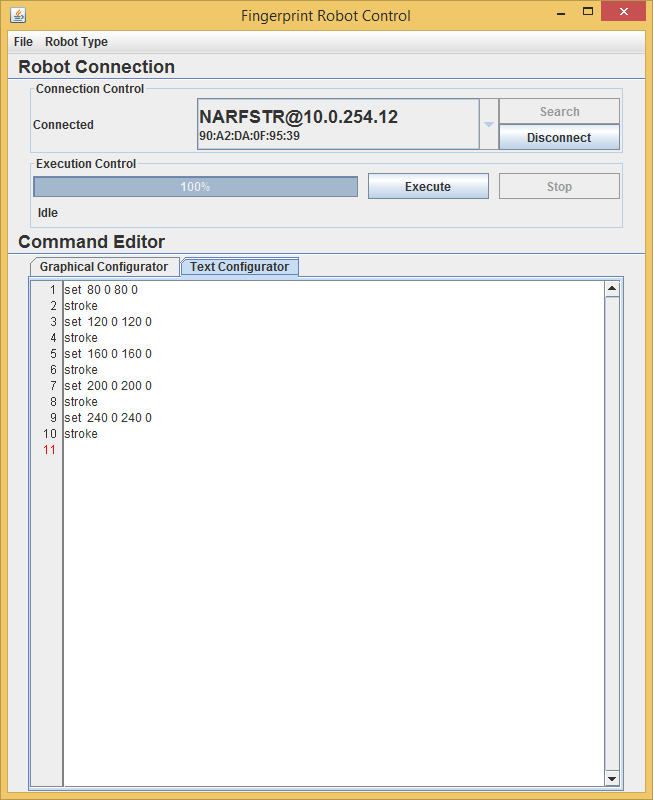
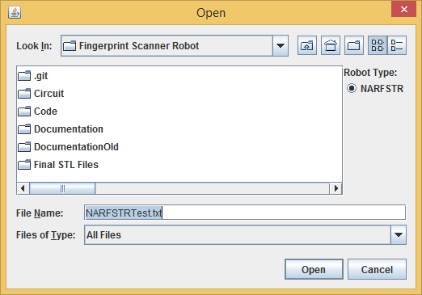

Using the Robots¶
The robots are controlled by text commands send to them over either a serial connection, a TCP network connection, or a UDP network connection. These text commands can be sent in many ways. They can be sent through the Java control software, using both the command line interface and the GUI, they can be sent using Telnet or Putty, and they can be sent using serial terminal, such as gtkterm. This guide will explain the command format, and how to send commands using all the different channels.
Communication Protocol¶
Protocol¶
General Information¶
- The robot will receive input from a serial stream via USB or over a network connection on port 2424 (the NAFSTR uses port 80 because its software is old) via Ethernet. The format of the requests will be the same in all cases.
- When the robot is connected over the network, it is capable of receiving requests over both a UDP connection and a TCP connection. However, if any request is received over a UDP connection, the response message will be sent over a TCP connection.
- With the exception of UDP messages as mentioned above, the robot will respond to all messages over the channel the message was received on.
- The robot only has a 64 byte serial buffer. Thus, if many commands are sent rapidly over USB, some commands will be lost. However, when connected over Ethernet, the robot has a 16 kibibyte buffer, thus making an overflow less likely.
Format¶
- Each command has the format
commandName arg_0 arg_1 arg_2..., wherearg_nis the nth argument. If the command has no arguments, then the command is simply the name. Each part of the command is separated from the others with a single space. - Upon receiving and successfully parsing a command, the robot will send a message of the format
commandName-received. If there is a problem parsing a command, the robot will instead sendbad-command. - Upon completion of a command, the robot will send a message of the format
commandName-end. - When sent the string “fingerrobot”, the robot will respond with a string of the format:
found:robot type:MAC Address:. For example, a NARFSTR robot with a MAC address ofba:db:ad:ba:db:adwould respond withfound:NARFSTR:ba:db:ad:ba:db:ad:.
Commands¶
NARFSTR Commands¶
| Stroke: |
|
||||||||||||||
|---|---|---|---|---|---|---|---|---|---|---|---|---|---|---|---|
| Set: |
|
||||||||||||||
| Reset: |
|
NAFSTR Commands¶
See DocumentationOld/Arduino - Computer Communication Protocol.docx or DocumentationOld/Arduino - Computer Communication Protocol.txt for details.
Examples¶
The following are examples of what an exchange with the robot would look like.
NARFSTR Example¶
fingerrobot
found:NARFSTR:90:a2:da:0f:95:39:
set 120 2000 120 2000
set-received
set-end
stroke
stroke-received
stroke-end
reset 1000 255
reset-received
reset-end
notacommand
bad-command
NAFSTR Example¶
Please put one here!
Control with FingerpintRobotControl Java Program¶
The program can be found in Code/FingerprintRobotControl/FingerprintRobotControl-v1.1.jar and allows for both GUI and command line operation. The following two sections describe both methods.
Note: the NAFSTR uses an older version of the software, found in Code/FingerprintRobotControl/FingerprintRobotControl-v1.0.jar. Most, but not all, of the instructions below apply to the older version.
GUI Control¶
To launch the program in GUI mode, simply run the program. Or, launch the program from the command line with no arguments: java -jar FingerprintRobotControl-v1.1.jar. Once the program opens, you should see a window like the one below.
This is the starting screen. To use the program, first search for robots by clicking the “Search” button. After about three seconds, the combo box will be populated with the types, locations, and MAC addresses of all the robots the program found. To connect to a robot, select one from the list and press connect. If the connection was successful, the status field to the left of the combo box should say “Connected”.
Now, you can begin to write the commands you want the robot to execute. There are two ways to do this: (1) using the graphical configurator, which requires no knowledge of the communication protocol or, (2), using the text configurator, which allows you to simply type the commands you wish to send to the robot. To use the graphical configurator, press the button on the bottom of the screen with the name of the command you wish to add. A command should show up on the screen. Now, type in the specified values. A complete graphical program looks like the one below.
To use the text configurator, select the tab labeled “Text Configurator”. If you have a program currently open if the graphical configurator, it will automatically be converted to text and displayed in the text configurator. This is a good way to learn the text format of the commands. Once you are in the text configurator, simply type commands. A program written with the text configurator is shown below:
Once you are done with you program, you can save it by going to “File” menu and clicking “Save”. This will bring up a dialog asking you where you would like to save your file. The saved files are plain text files, with the same content that appears in the text configurator. To open a file, choose “Open” from the “File” menu. When you open a file, there will be radio buttons on the right side of the open dialog to allow you to choose the type of robot the opened file is for. (Currently, there is only one button for the NARFSTR. Support will be added for the NAFSTR in the future.) The picture below shows the open dialog.
To execute your programs, hit the “Execute” button. This will send the commands to the robot. You can see the progress in the progress bar. If you want to stop execution, hit the “Stop” button. This will stop execution after the currently running move is complete. There is no way to stop execution in the middle of a move. If you click the stop button, and the program still says “Stopping” under the progress bar even though the robot has stopped, you may need to click the “Force Stop” button. This will immediately disconnect the robot.
Command Line Control¶
To run the program from the command line, use the following command:
java -jar FingerprintRobotControl-v1.1.jar robotType fileName connectionMode
| Parameters: |
|
|---|
Control Using Telnet, Putty, and other Terminals¶
The robot can easily be controlled using any terminal. With telnet, simply type telnet ipAddress 2424, where ipAddress is the IP address of your robot. With Putty, enter the IP address of your robot and the port 2424. Then, select telnet for the protocol and hit connect. For gtkterm, launch the terminal and select the right serial port. Once you have connected your terminal, just type commands, 1 per line, and the robot should execute them.